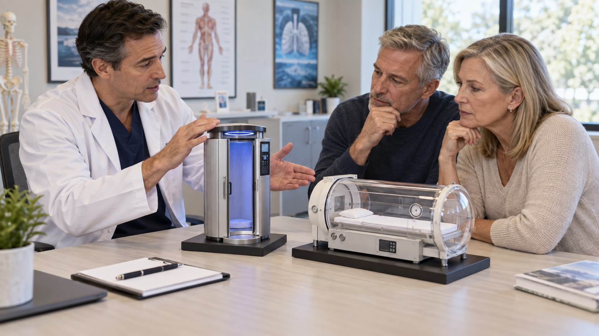
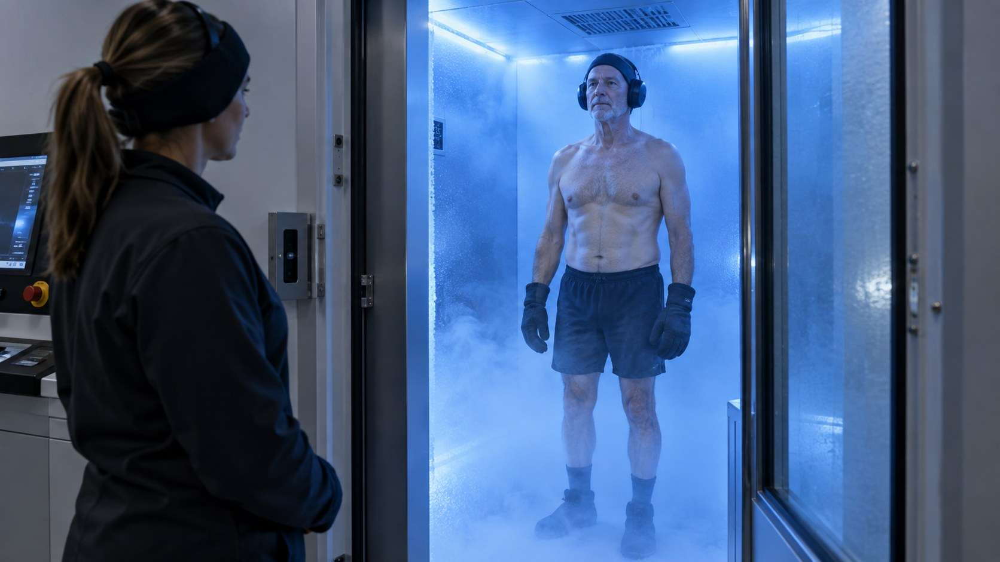

Szybka odpowiedź
Jeśli rozważasz zabieg, pamiętaj: kriokomora i HBOT nie są zamiennikami. Dla krioterapii całego ciała dowody na regenerację po wysiłku pozostają niepewne. Medyczna tlenoterapia hiperbaryczna ma konkretne wskazania, ale nie jest zabiegiem odmładzającym. Przed zakupem pakietu zapytaj o rozpoznanie, protokół, kwalifikację, możliwe szkody i sposób oceny wyniku.
Kluczowe wnioski
Najpierw rozdziel wskazania medyczne HBOT od komercyjnych obietnic regeneracji i odmładzania.
- Krioterapia całego ciała wystawia organizm na zimne powietrze; HBOT łączy podwyższone ciśnienie z oddychaniem tlenem.
- Cochrane uznał dowody na zapobieganie i leczenie bólu mięśni po wysiłku przez WBC za niewystarczające i bardzo niskiej jakości.
- HBOT ma listę uznanych wskazań medycznych; „energia”, „anti-aging” i ogólna regeneracja nie są rozpoznaniami.
- Ryzyka są różne: zimno może uszkadzać skórę i tkanki, a HBOT może powodować uraz ciśnieniowy i stwarza ryzyko pożaru.
- Nazwa urządzenia nie wystarcza. Liczą się wskazanie, parametry, kwalifikacja, nadzór i procedury awaryjne.
Czym różni się kriokomora od HBOT?
Krioterapia całego ciała polega na krótkiej ekspozycji skóry i ciała na bardzo zimne, suche powietrze. W medycznej HBOT pacjent oddycha tlenem w komorze, w której ciśnienie przekracza atmosferyczne. Inny bodziec, inny sprzęt i inne wskazania oznaczają, że wyniku jednej procedury nie wolno przypisywać drugiej.

Hasło „komora” nie mówi jeszcze, czy oferowana usługa odpowiada protokołowi badanemu w danym wskazaniu. Przed decyzją trzeba znać rodzaj urządzenia, ciśnienie, gaz oddechowy, czas sesji i kwalifikacje personelu. Wstępną rozmowę o stanie zdrowia pomaga przygotować przewodnik badań po 50-tce.
Czy kriokomora rzeczywiście przyspiesza regenerację?
Przegląd Cochrane dotyczący bólu mięśni po wysiłku ocenił dostępne badania jako małe i obciążone ryzykiem błędu, a pewność dowodów jako bardzo niską. Nie wystarcza to do obietnicy szybszej regeneracji, leczenia przewlekłego bólu, poprawy snu, spalania tłuszczu ani „cofania wieku biologicznego”.

FDA podkreśla, że korzyści lecznicze krioterapii całego ciała pozostają niepotwierdzone, a zimno może powodować obrażenia. Subiektywne poczucie pobudzenia po sesji nie dowodzi trwałej poprawy zdrowia. Przy powrocie do wysiłku bardziej przewidywalną podstawą jest stopniowo dopasowany plan ruchu.
Kiedy HBOT jest leczeniem, a kiedy ofertą wellness?
HBOT jest procedurą medyczną, gdy służy leczeniu konkretnego rozpoznania według odpowiedniego protokołu. UHMS wymienia między innymi chorobę dekompresyjną, zatrucie tlenkiem węgla, wybrane trudno gojące się rany, późne uszkodzenia popromienne i niektóre ciężkie zakażenia. Lista nie oznacza, że każdy przypadek kwalifikuje się automatycznie.
Ogólne hasła „dotlenienie”, „mgła mózgowa”, regeneracja po treningu czy odmładzanie nie zastępują wskazania. Także „miękka komora” przy niższym ciśnieniu nie może automatycznie przejąć dowodów z badań konkretnej medycznej HBOT. Jeśli problemem jest zmęczenie lub sen, najpierw trzeba szukać przyczyny; punktem wyjścia może być poradnik o śnie po 50-tce.
Jak ocenić obietnice kliniki?
Poproś o nazwę rozpoznania, dokładny protokół oraz badanie, które dotyczy podobnych pacjentów i tego samego wyniku. Następnie zapytaj, kto kwalifikuje, jak rejestrowane są działania niepożądane i po czym poznacie brak efektu. Odpowiedź „warto spróbować” nie uzasadnia z góry wielosesyjnego pakietu.
| Pytanie | Po co je zadać? |
|---|---|
| Jakie jest rozpoznanie? | Oddziela leczenie konkretnej choroby od ogólnej obietnicy wellness. |
| Jaki dokładnie protokół? | Pozwala porównać urządzenie, ciśnienie, tlen, temperaturę i czas z badaniem. |
| Jaki mierzalny wynik? | Chroni przed oceną opartą wyłącznie na chwilowym samopoczuciu. |
| Co w razie powikłania? | Sprawdza nadzór, szkolenie personelu i procedury awaryjne. |
Kto powinien szczególnie uważać?
W HBOT nieleczona odma opłucnowa jest klasycznym przeciwwskazaniem bezwzględnym. Problemy z uszami lub zatokami, choroby płuc, niewydolność serca, gorączka i część leków wymagają oceny zespołu prowadzącego. Przed kriokomorą szczególnej ostrożności wymagają zaburzenia czucia, krążenia oraz choroby wywoływane przez zimno.
FDA w 2025 roku przypomniała placówkom HBOT o ryzyku pożaru, właściwym szkoleniu personelu, ciągłym nadzorze pacjenta i przestrzeganiu instrukcji urządzenia. W obu procedurach przerwij sesję i natychmiast zgłoś ból w klatce piersiowej, duszność, silne zawroty głowy, zaburzenia widzenia, narastający ból ucha albo niepokojące zmiany skóry. Przy bólu kręgosłupa z osłabieniem kończyny lub zaburzeniami zwieraczy potrzebna jest diagnostyka, nie komora; objawy omawia artykuł o dyskopatii.
Najważniejsze pytanie nie brzmi „która komora jest lepsza?”, lecz „jakie rozpoznanie i jaki dowód uzasadniają tę procedurę u mnie?”.
Najczęściej zadawane pytania
Odpowiedzi rozdzielają niepewne dane o krioterapii całego ciała od medycznych wskazań i ryzyk HBOT.
Czy krioterapia pomaga na bóle kręgosłupa?
Nie ma dobrych dowodów, że krioterapia całego ciała leczy przyczynę bólu kręgosłupa. Może zmienić odczuwanie bólu na krótko, ale nie zastępuje rozpoznania, ruchu ani leczenia dobranego do objawów.
Czy po sesji w komorze hiperbarycznej mogę prowadzić auto?
Stosuj zalecenia ośrodka wynikające z Twojego wskazania i protokołu. Jeśli po sesji masz zawroty głowy, zaburzenia widzenia, ból ucha lub złe samopoczucie, nie prowadź i zgłoś objawy personelowi.
Czy kriokomora pomaga schudnąć?
Nie ma wiarygodnych dowodów, że krioterapia całego ciała powoduje istotną i trwałą utratę tkanki tłuszczowej. Nie zastępuje bilansu energii, aktywności ani leczenia otyłości.
Czy komora hiperbaryczna jest bezpieczna dla serca?
To zależy od stanu serca, płuc, leków, wskazania i protokołu. Niewydolność serca oraz inne choroby trzeba zgłosić lekarzowi kwalifikującemu; bezpieczeństwa nie da się ocenić na podstawie samego wieku.
Źródła
Źródła obejmują regulatora wyrobów medycznych, przegląd Cochrane, towarzystwo medycyny hiperbarycznej i podręcznik kliniczny.
- FDA — ryzyko terapii zimnem i niepotwierdzone korzyści WBC
- Cochrane — WBC a ból mięśni po wysiłku
- UHMS — uznane wskazania do tlenoterapii hiperbarycznej
- FDA 2025 — bezpieczne używanie urządzeń HBOT
- NCBI Bookshelf — działania niepożądane i przeciwwskazania HBOT
Uwaga: Artykuł ma charakter informacyjny i edukacyjny. Nie zastępuje konsultacji lekarskiej, diagnozy ani leczenia.